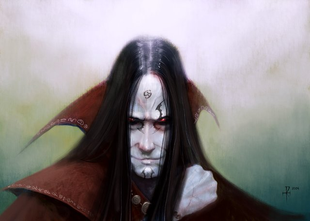
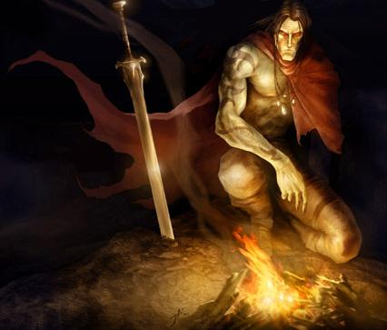

Adept of Darkness
Gli Adepti dell'Oscurità
sono il risultato dell'influenza dell'energia negativa sul concepimento di un
nuovo essere umano. In particolare gli utenti di
necromanzia (sia maghi che chierici di Karan che non siano non-morti) a furia di
utilizzare magie basate sull'energia negativa infettano il proprio seme o il
proprio ovulo con tale forma di energia. In rari casi, dunque, quando
concepiscono un figlio costui (se non muore durante la gravidanza) risulta
geneticamente modificato. Parte dei suoi geni sono di tipo negativo anche se
predominano i geni normali. Tale creatura ottiene, dunque, dei poteri e delle
limitazioni connesse alla sua natura di semi non morto. Si badi, però, che si
tratta ancora di un essere vivente che cresce e ha un metabolismo
comune. L'influsso dell'energia negativa lo ha reso però estremamente pallido
ed appare spesso emaciato e con gli occhi infossati nel viso.

Essendo fondamentalmente umani si applicano a costoro tutte le regole previste per questi. Inoltre si applicano le seguenti caratteristiche speciali :
Mancanza di affaticamento : Queste creature non si affaticano, per questo motivo non hanno bisogno di riposare e di dormire. Inoltre non subiscono gli effetti della fatica in combattimento e quelli dovuti all'uso delle magie (ad es. Ray of Fatigue). Al tempo stesso i non-morti non possono riposare (del resto non ne hanno bisogno) ma si considerano sempre in una condizione di non affaticamento, per quanto riguarda il recupero del punti ferita si considera come se fossero sempre in stato di riposo indipendentemente dalle loro attività (si noti che gli è però interdetto il riposo totale), quanto invece ai punti magia costoro recupereranno 2 punti magia all'ora indipendentemente dalle loro attività.
Lentezza nell'apprendimento : L'Adepto dell'Oscurità non apprende nuove nozioni alla stessa velocità di un normale essere umano. Infatti l'energia negativa nega gli effetti dinamici tipici dell'energia positiva. In termini di gioco quello che un essere vivente può imparare in 8 ore di lavoro (o studio) sarà recepito dal non morto in 24 ore interamente dedicate (del resto non necessitano di riposo per cui possono dedicare interi giorni consecutivi allo studio).
Visione dei Non Morti : Gli Adepti dell'Oscurità vede, utilizzando i propri occhi, di notte come se fosse di giorno indipendentemente dalla luce presente, la sua vista però è in bianco e nero e non riesce a distinguere i colori. Si noti che non è immune all'accecamento (sia fisico che operato attraverso magie come light) e la sua vista non può penetrare il buio creato magicamente.
Impossibilità di procreazione : Gli Adepti dell'Oscurità non sono in grado di procreare nuove creature viventi anche se i loro organi riproduttivi sono in grado di funzionare.
Tolleranza al negativo : A differenza delle creature viventi gli adepti dell'oscurità subiscono solo 1/2 dei danni per eccesso (1/4 se sono dimezzabili) dall'esposizione diretta ad un ad una fonte di energia negativa. Inoltre se utilizza incantesimi necromantici non subisce gli effetti dannosi dall'esposizione all'energia negativa.
Refrattari all'energia positiva : L'esposizione diretta ad energia positiva anche se non li danneggia non produce interamente gli effetti positivi che avrebbe prodotto su di un altro essere vivente, ma hanno unicamente il 50% di possibilità di funzionare. Tale penalità si applica solo per gli effetti positivi basati sulla sommistrazione di energia positiva pura (quindi si usa nei casi di magie clericali di scuola Necromancy che abbiano effetti positivi sugli esseri di energia positiva, tali magie, infatti utilizzano direttamente energia positiva (dovrebbero infatti considerarsi di Evocation [Positive], ad esempio molte magie di cura clericali, aid e raise dead).

Risveglio negativo : Quando il personaggio muore vi è una percentuale pari al 15% + 1% per livello di esperienza che dopo 1d4 rounds l'energia negativa presente nel suo corpo lo pervada rianimandolo nella non vita. In questo caso diventerà completamente undead e si applicheranno le regole previste per i non morti (link)in sostituzione di tutte le altre caratteristiche speciali qui previste. Le sue condizioni fisiche saranno quelle del suo corpo al momento del risveglio. Il risveglio avviene solo se il corpo si trovi in condizioni definibili buone, ossia senza menomazioni che impediscano totalmente in un essere vivente la vita (ad esempio la decapitazione, oppure se è stato schiacciato completamente, bruciato, divorato). Potrà, invece, svegliarsi anche se a subito danni ingenti (perdita di un arto, ustioni profonde, ecc...). Si noti che il suo copro resterà, senza degenerare ulteriormente, nello stato in cui si trovava al momento del risveglio, quindi ad esempio saranno visibili ustioni e ferite, anche se recupererà subito la piena funzionalità delle parti presenti (attraverso il recupero dei punti ferita, quindi, tenderà a ritornare allo stato originario che aveva al momento in cui è divenuto non morto). Si noti che si considererà un non morto che mantiene in parte le sue funzioni corporali. Una volta non morti devono raggiungere un ammontare di punti esperienza pari al 286% di quelli che dovrebbero normalmente raggiungere per la classe scelta.
Gli Adepti
dell'Oscurità devono
raggiungere un ammontare di punti esperienza pari al 143% di
quelli che dovrebbero normalmente raggiungere per la classe scelta.